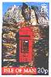
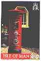

 |
|
 |

- Hallo Victor, Your Van Gogh page is really fascinating, especially for me. Congratulations! David M. 8/27/97
- *Excellent* page, Victor! Which is not really a surprise given the rest of your great site. I'll add a link directly to this page, too, on my list of links. And thanks very much for the link back. Keep up the wonderful work! David B. 8/27/97
- I ran across your site and thought it was one of the most unique sites I have seen. I design web sites for myself and my companies. Bob K., 9/11/97
- Just a special thanks to you for placing such a beautiful site online. What a lot of work.. but a work of love, no doubt. I have bookmarked it for future reference... I'll be back. Sincerely, Mary Ann A. 9/15/97
- You have a nice and useful site! I have searched a very long time for a site "Arts on Stamps". Ythzak L., 10/29/97
- Auch ich habe durch deine Seite sympathische und nette Menschen, darunter auch dich, kennengelernt. (I also met through your site friendly and nicely people, including you). Gerhard B. 12/23/97
- Happy New Year Victor, Thank you for the Microsoft Access database of paintings on stamps. By the way I believe your site is one of the most attractive and informative on the web. The layout and colours add class to the site. Thanks one again, Regards, Mike R. 1/1/98
- Bravo pour votre site ! Amicalement. Pilou. 1/15/98
- Compliments for your site. The quality is very high. The stamps on the screen are more beautiful than in mine album! Very nice. Erik P. 3/17/98
- Sincerely (even if I'm neither a philatelist nor an artist) I think that your Web page is one of the best I've ever seen. Congratulations! Fabio. 3/21/98
- Hi Vic, Your site is by far the best stamps site found on the net. Take Care, Boomer. 4/7/98
- Ich finde diese Seite sehr gut und werde bestimmt wieder zurückkommen. Die Seite ist sehr gut aufgebaut und man findet schnell was man sucht. Robert S. 4/12/98
- I spent a lot more time at your site tonight and really enjoyed your on-line album. I hope other people see it and see our excitement about collecting art on stamps. The shot-art part was fascinating! Roy B. 6/1/98
- Hi, Victor. Yes, I live in Taiwan. And can you tell me are you Chinese? If you are not, I am very surprised that you understand Chinese stamp so much! Peter. 6/2/98.
- You have a wonderful site. A link to your site will be added in a week or so! Tom. 6/6/98.
- I am so pleased to have discovered this site. I think it is absolutely wonderful. Thank you for all your hard work. Jessie. 6/17/98
- Excellent site, well designed. Thanks for this nice site. Bill K. 6/20/98.
- I think the site is a brilliant idea. I'd like to see more ads. Good luck. Roberto S. 7/8/98
- How excited I was to visit your site. It is so comprehensive and just like taking a trip to an art museum in some foreign country of the world. Thank you so much and keep up the great work. Paulette W. 7/9/98
- Paintings and Arts is my favorite topic. I like this site, thank you for the great job and the database. Boris K. 7/16/98.
- I think an Internet club is a great idea. After 10 pm, after the kids are in bed, I indulge. 7/17/98. Roy B.
- Hi Victor, I stopped by your Site and was impressed, you have done a great job. Gary G. 8/1/98.
- The work you have done is wonderful. Puneet B. 8/7/98.
- It's a great site. There is only a minor drawback. I have a 14" monitor and I have to move the scroll bar to the right and back. But again, it's a great site, especially the Mona Lisa page with its well chosen music. Good job. Yan G. 8/9/98.
- The site is great ! Thorough work and nicely presented ! DB is OK but more specific sub-databases are needed. Wim v. D. 8/12/98.
- Really enjoy what I am seeing on this site... Hope I can be a member. Charles K. 8/18/98.
- I have looked at your paintings on the Web. They are so beautiful and the page was created professionally. I congratulate you. Okan A. 8/26/98.
- I have visited with pleasure your site and will continue to do it, it is one of the most successful and useful. Dan B. 8/26/98
- Très bon site. Felicitation! Eduardo M. 9/3/98.
- I liked this site very much. It's very interesting and helpful for the stamp collectors. Augusto Reis A. 9/7/98.
- It is a very interesting site. Annete O. 9/9/98
- It appears to be very well done and just happened to be the type of page I was hoping to find. Keep up the excellent work. Andy MC. 9/11/98.
- This is my first visit and I am glad to find you here. Until now this is the best stamps site that I ever visited. Luis M. 9/16/98.
- I did visit your web site a few times more by now... it is always interesting and I find it fun to just read them over! T.K. 9/28/98
- I think this is a very interesting site. I just collect only Italian stamps, but I would like to start collecting also stamps concerning art and painting. Antonio V. 10/3/98.
- I like to see your stamps. Pierre B. 10/6/98
- Thank you very much for generously sharing this material (database - V.M.) with the Internet. A nice site and obviously you've spent a tremendous amount of time. David R. 10/11/98
- Site merveilleux! Luciano P. 10/14/98.
- This is the coolest site I've been when it comes to philately, since the No.1 interest I have is for stamps concerning paintings and other arts... thank you for this cool site. Rizza L., 11/3/98
- I am new on the Internet, but old with my stamps - and I thank you so much for some wonderful hours spent with your art! Otlo I. 11/6/98.
- This is a great site Victor. I am more and more impressed, the more I look at it. It is sure that I will return many times. And what I like best is, of course, the pottery-site with the Danish Flora Danica. Ann-Mette H. 11/8/98.
- I love your site and will try to get as many of these beautiful stamps as possible ($$ permitting). You are truly to be commended for developing such a quality site. Thanks so much. Marita S. 11/13/98.
- You cannot believe how frustrated I become after visiting your website. I was going to put on the web my collection of stamps with the same theme, but then I did a search and found your superb site. Gregory. 12.12.98. (I answered Gregory and I encouraged him to publish his collection on the Web - V.M.)
- I enjoyed your site very much and it was such a wonderful help to me to meet and make new acquaintances, including especially you. T.K. S. 12/22/98.
- Now I had a chance to look at your Christmas page - another wonderful collection and design! It truly needs a lots of passion and time to do all the great work. Jingyan Z. 12/23/98.
- I love your site. Otlo I. 12/28/98.
- You are not just an art lover! You are an artist by yourself! Great Job! I really admire you! May God gives you power to keep on going! Dimitris G. 1/7/99.
- Very nice looking page. I'm just a beginner so here I have found much more than I can handle! Bjorn L. 1/13/99
- Wonderful site. Art W. / I like this Web site very much. It is very nice and very interesting. Jan B. 1/22/99.
- Ce site est sans aucun doute très util pour les collectionneurs de timbres sur la peinture, de plus il est le seul actuellement à ma connaissance. Philippe I. 2/6/99.
- This is my first visit and I'm very impressed. Great site. Richard T.H. 2/7/99.
- A really attractive and informative service by Shri Victor Manta for the lovers of arts and philately worldwide. Thanks. Rajesh A. 3/5/99.
- I had a lot of pleasure reading the pages and the articles on your site. Adolfo I. 3/6/99.
- What about to have in the database some data on the paintings (title, year,...)? I think that your site is fabulous. Gian P. 3/14/99. (In my answer I explained that I cannot do such a big work alone, even if I would like it. V.M.)
- Fabulous site! I cannot provide suggestions on what's missing or what needs improving just now as I'm still overwhelmed by my first visit! Susan K. 3/30/99.
- Your web page is gorgeous: thanks for the viewing pleasure. Robert R. 4/2/99.
- Thanks for a wonderful home page, I´m really glad I have found it. Ake. 4/11/99.
- Am vizitat site-ul creat de dvs si mi-a facut o impresie deosebita. NOTA ZECE ! (I have visited your site and I was very impressed. Highest grade!) Loredana V. 4/14/99.
- Great! For a stamp collecting novice, this site is really a blessings! Jose L., 4/16/99.
- Congratulations for the Paintings and Arts on Stamps Journal and for the enlargement of your site. I particularly like the new landscape page... You have really achieved something very, very nice. Ann H., 4/29/99.
- A beautiful site and a good idea for my second topical collection. I have quite a large amount of "paintings" stamps and I will start to reorganize this collection thanks to you. Sergio de B. 5/15/99.
- A very good site and as I can see a lot of work went into making it. Bob H. This site looks great. Bogdan. 3/6/99.
- I visited your web site and it looks fantastic !!! Great Job.... Madhav K. 6/16/99
- The new Monet stamps page looks really beautiful. Satu H. 6/20/99.
- Great Site!!! Really, I found everything I looked for!!! Joao P. / This is a great site!! Dr. Florian Cs. 6/25/99.
- I can't believe I have found this site. It's a dream that comes true! Thanks for your wonderful web site. I would like to become a club member. Ellen E. 7/1/99.
- I came upon your site by accident. I will be visiting your site more often now that I know where you are. Thank you for such a great site. Michael M. 7/25/99.
- I have just visited and greatly enjoyed your web site. Hugh G. 8/2/99.
- Thanks for displaying all these beautiful paintings on stamps. I plan to start collecting art on stamps although I know very little about art. This site definitely has motivated me to proceed. Winnie L. 8/4/99.
- Splendid, Victor! I must recognize that those very philatelic stamps make quite a gallery, when put together. Of course :-))) I like that kind of humor (Nudes page - V.M.). Thank you for your nice site. Helene S. 8/5-9/99.
- I was introduced to your beautiful web page by a friend - what a lovely site - a trip to a museum. Anna-Marie. 8/31/99.
- It's a wonderful site with enjoyable paintings plus humor. Winnie L. / I really enjoyed myself at the nudes page. Laughter is good for the soul. Helen F. 9/5/99.
- I've just been visiting your site (again), and "took off to Japan". I must say that this is one of the most interesting and successful pages you've ever made. It is simply a beauty, both from a philatelic and an aesthetic point of view. George K. 9/9/99.
- Your site is very nice and the idea very original! I am not a stamp collector but I enjoyed browsing. Thank you. George M. 9/13/99.
- It's a pioneering enterprise ! Wim v. D. 10/9/99
- I think it is truly a thorough work of dedication and love of art. How wonderful that you find time and energy to dedicate yourself to this gigantic task. Magloire Leon. 10/30/99.
- I am happy to find this site because my friend collects stamps, and I am looking for certain stamps of certain paintings to give to her as a gift, so this site is very helpful to me. Kelly P. 11/8/99.
- Your site is so beautiful and viewers like me can feel how you are eager to collect and study stamps. I often visit your site, especially at weekends. Hidenori H., 11/19/99.
- Your internet club looks very interestingly, and I just signed up. I love your site, a marvelous work. I especially like your Greek vases, they are beautiful. Kasha. 12/1/99.
- This is a lovely Christmas gift you have given the stamp collectors of the world (the Stamps Christmas Tree - V.M.). Thank you! Ada. 12/10/99.
- You have a very beautiful website. You have worked hard to make it one of the nicest sites for locating art stamps. Nidia. 12/26/99.
- A very useful and interesting site. Shall visit often now that I have found you. Judith Ann P. 12/31/99.
| Revised: 12/04/08 |

|
|

|